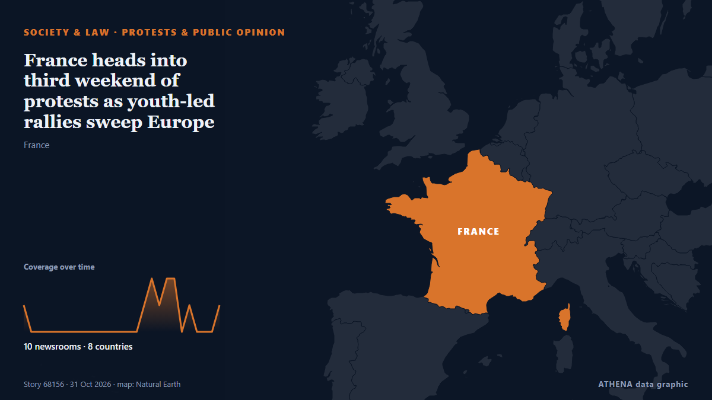

Protestas y opinión pública
| 18 oct | 0 |
|---|---|
| 19 oct | 1 |
| 20 oct | 0 |
| 21 oct | 0 |
| 22 oct | 0 |
| 23 oct | 3 |
| 24 oct | 1 |
| 25 oct | 0 |
| 26 oct | 5 |
| 27 oct | 2 |
| 28 oct | 2 |
| 29 oct | 0 |
| 30 oct | 8 |
| 31 oct | 2 |
Los titulares se muestran en inglés, tal como se publicaron.

France heads into third weekend of protests as youth-led rallies sweep Europe
Thousands of mostly young protesters took to the streets across France on Saturday in a third consecutive weekend of demonstrations over living costs and education. de The Canadian Press (via CityNews)
Youth protests begin in over 30 German cities as authorities warn of possible unrest
In Berlin, demonstrators are gathering at the Brandenburg Gate with more than 10,000 participants expected. de TASS (English)
Fears of violence as France braces for Halloween protests
France will deploy some 70,000 police officers in Paris and other cities ahead of a new round of nationwide protests on Saturday, with Interior Minister Laurent Nuñez warning of a "very high risk of… de France 24 English
Mass protests sweep Italy during nationwide strike
Grassroots union Unione Sindacale di Base called 24-hour general strike, with protests planned in more than 40 cities. de Express Tribune
Thousands of students and workers protest in Italy under heavy security
Thousands of students and workers took to the streets across Italy on Friday, calling for more school funding and relief from the soaring cost of living, amid a high police presence to avert possible… de The Local Italy
Europe's Gen Z protesters just want to be heard
MAYA Gourdel, a 19-year-old student in Brussels, sits at a desk writing slogans against those running her country: “If we burn, you burn with us!” de New Straits Times
Macron braces France for another 'high-risk' Saturday of protests
Macron signals 'significant announcements and progress aimed at bringing about changes' de Anadolu Agency (English)
French interior minister to deploy 70,000 police for Halloween protests
PARIS, Oct 29 - French Interior Minister Laurent Nunez said that this Saturday was looking like \"a very high risk\" day for public order and that he would again deploy 70,000 security forces to try… de The Straits Times
France's Yellow Vest movement calls new protests for October 31st
France's Yellow Vest movement, which has helped organise protests rocking the country, called Saturday for new demonstrations on October 31. de The Local France
Protesters storm Serbian pro-Vucic TV station after his loss at polls
President Vucic called the incident an attack on free speech and the freedom of journalism. de Al Jazeera English
French Senate Passes Bill to Make Protesters Pay for Unrest Damage
However critics warned the move could curb the right to protest. de The Straits Times
Anti-mega dam protest rocks Arunachal capital
The protestors in Itanagar want the Siang Upper Multipurpose Project plan scrapped and arrested activists released. de The Hindu
Serbia’s ‘students’ celebrate for a second night after election victory
Thousands gathered on the streets of Belgrade for a second night to celebrate the student-led movement's victory. de Al Jazeera English
Albania opposition disrupts parliament session after violent street protests
TIRANA, Oct 29 - Opposition lawmakers in Albania disrupted a parliament session by letting off flares on Thursday following weeks of violent anti-government protests called by students demanding the… de The Straits Times
Employers must prioritise locals before hiring foreign workers, says Ramanan
Employers must use MyFutureJobs portal to seek local candidates first. de Malaysiakini
The Long March, told through what remains
A village's story of change: From the Long March to today. de CGTN (China)
Hundreds protest in Tel Aviv, Jerusalem and Haifa, call for Jewish-Arab government
Demonstrators gathered to demand Jewish-Arab cooperation as the opposition has won 67 seats, including 19 held by Arab parties, leaving Eisenkot's bloc short of a majority without Arab support. de Haaretz (English)
Police made 1,314 arrests in France's protests: government
Over 1,300 arrests were made across France during protests against high living costs, with reports of violence and injuries among police officers. de Arab News
Italian PM slams 'shameful' release of alleged protest organiser
Italian Prime Minister Giorgia Meloni on Wednesday slammed as "shameful" the decision by a judge to dismiss accusations against a campaigner arrested on terrorism charges for allegedly seeking to… de The Local Italy